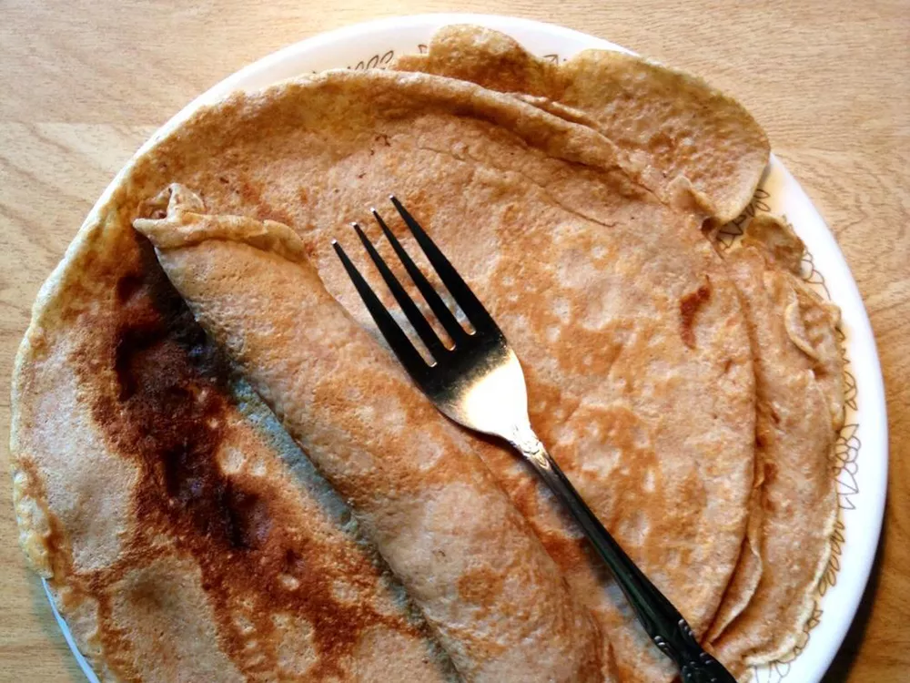

Crepes

I love this recipe because it is so simple to make. I have made it healthier by substituting whole wheat flour and 1% milk. I like to fill them with non-fat plain Greek yogurt and blueberries warmed in maple syrup. Yum!
Ingredients
Here are the ingredients you will need to make this recipe.
- 1 cup white whole wheat flour
- ½ cup low-fat (1%) milk
- 2 eggs
- ¼ teaspoon salt
- Whisk together flour and eggs in a large mixing bowl. Gradually add milk and water, stirring to combine. Mix in butter and salt and beat until smooth.
- Heat a lightly oiled griddle or frying pan over medium-high heat. Pour or scoop 1/4 cup batter onto griddle. Tilt pan with a circular motion so batter coats the surface evenly.
- Cook crepe until bottom is light brown, about 2 minutes. Loosen with a spatula, turn and cook other side. Serve hot with yogurt, maple syrup, and blueberries.
Other recipes